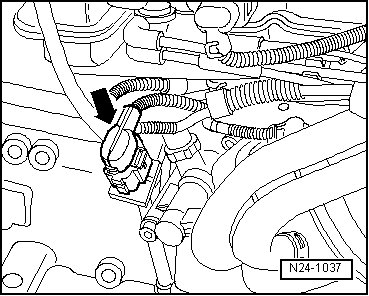
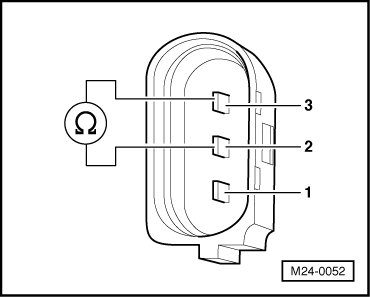
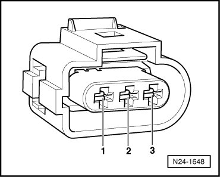

Engine Speed Sensor: Testing and Inspection
Diagnostic Procedures
Engine Speed Sensor, Checking
The Engine Speed (RPM) Sensor (G28) detects engine speed and reference marks. Without an engine speed signal, the engine will not start. If the engine speed signal fails while the engine is running, the engine will stop immediately.
Special tools, testers and auxiliary items required
• Multimeter (VAG1526) or Multimeter (VAG1715)
• Connector test kit (VAG1594)
• Wiring diagram
Test requirements
• Ground (GND) connections between engine and chassis must be OK.
• Ignition switched off.
Test sequence
- Disconnect gray 3-pin harness connector (arrow) to Engine Speed (RPM) Sensor (G28).

- Measure sensor resistance between terminals 2 + 3 at connector to sensor.

Specified value: 480 to 1000 ohms
- Check sensor for short circuit between terminals 1 + 2 as well as 1 + 3.
Specified value: infinite ohms
If specified values are obtained:
- Check wiring.
If specified values are not obtained:
- Replace Engine Speed (RPM) Sensor (G28).
- Erase DTC memory of Engine Control Module (ECM) , Diagnostic mode 4: Reset/erase diagnostic data.
- Generate readiness code.
Checking wiring
- Connect test box.
- Check wires between test box and 3-pin connector for open circuit according to wiring diagram.

Terminal 1 + socket 108
Terminal 2 + socket 90
Terminal 3 + socket 82
Wire resistance: max. 1.5 ohms
- Also check wires for short circuit to each other.
Specified value: infinite ohms
If no malfunctions are found in wires:
- Remove sensor and check sensor wheel for secure fit, damage, and run-out.
• There is a larger-sized gap on the sensor wheel. This gap is the reference mark and does not mean that the sensor wheel is damaged.
If nothing seems to be wrong with the sensor wheel:
- Replace Motronic Engine Control Module (ECM) (J220).
Final Procedures
After the repair work, the following work steps must be performed in the following sequence:
1. Check the DTC memory. Refer to --> [ Diagnostic Mode 03 - Read DTC Memory ] Diagnostic Modes 01 - 09.
2. If necessary, erase the DTC memory. Refer to --> [ Diagnostic Mode 04 - Erase DTC Memory ] Diagnostic Modes 01 - 09.
3. If the DTC memory was erased, generate readiness code. Refer to --> [ Readiness Code ] Monitors, Trips, Drive Cycles and Readiness Codes.